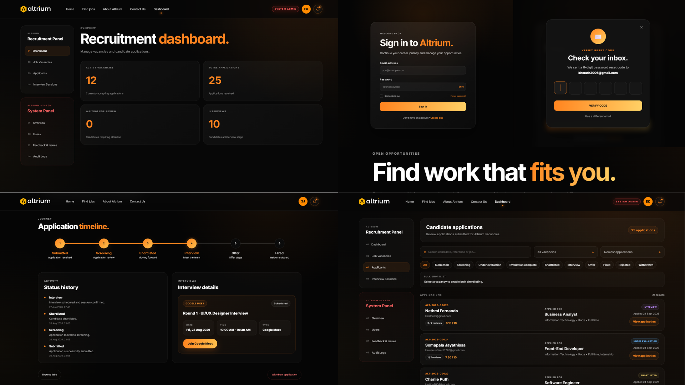
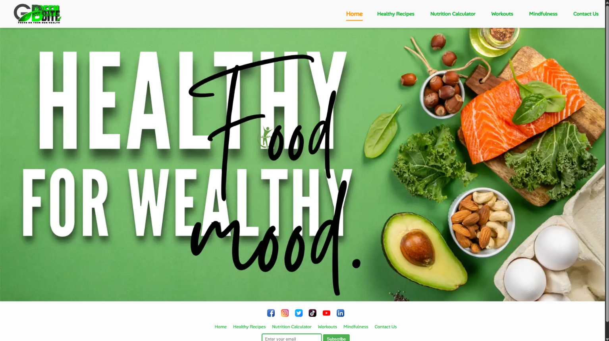
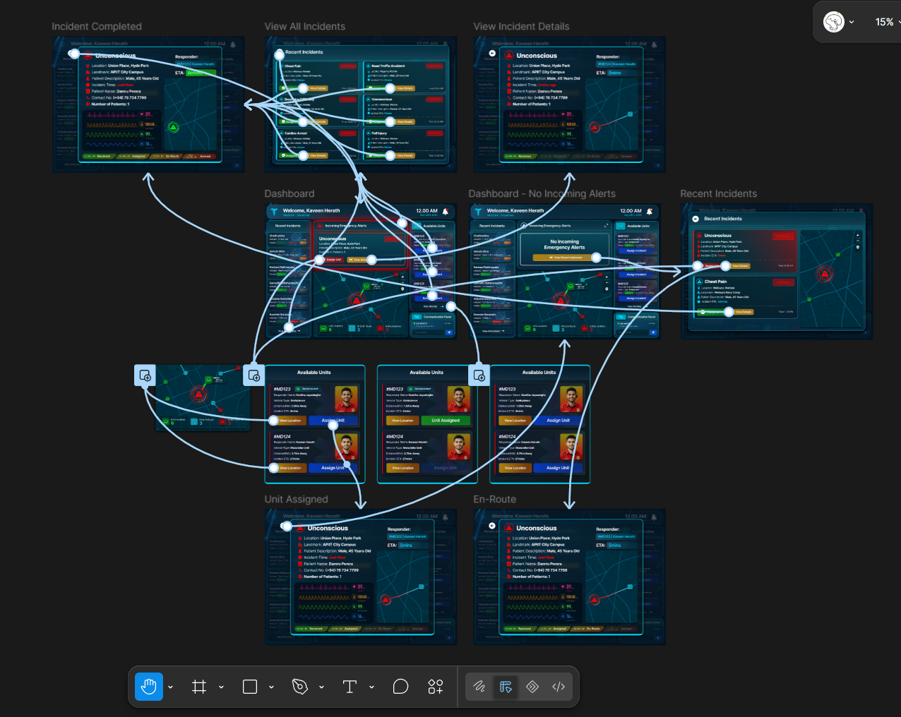
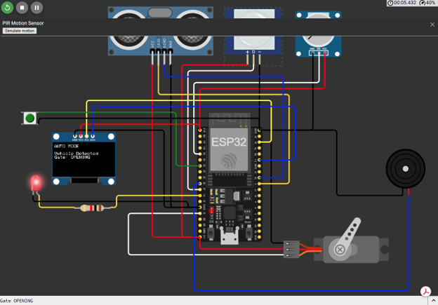

UI/UX · FRONT-END · FULL-STACK
Altrium
Recruitment management platform covering vacancy discovery, applications, interview scheduling, notifications and admin workflows.
COMPUTER SCIENCE UNDERGRADUATE · APIIT SRI LANKA
UI/UX thinking meets front-end development. I turn ideas, user needs and wireframes into polished, responsive experiences.
SELECTED WORK
A mix of product design, front-end development and systems thinking — from full recruitment platforms to smaller web experiences.

UI/UX · FRONT-END · FULL-STACK
Recruitment management platform covering vacancy discovery, applications, interview scheduling, notifications and admin workflows.

FRONT-END · WEB DEVELOPMENT
A responsive website built as a functional web-development project with a clear visual system and interactive browsing experience.

UI/UX DESIGN
A user-focused interface concept exploring information hierarchy, dashboards and streamlined healthcare workflows.

IOT · EMBEDDED SYSTEM
An ESP32-based embedded prototype combining motion detection, distance sensing, servo control, safety recovery and OLED status feedback.
A LITTLE ABOUT ME
I’m Kaveen, a Computer Science undergraduate at APIIT Sri Lanka who enjoys working where design and development overlap.
My focus is building interfaces that are visually sharp, easy to understand and practical to implement. I like moving from early flows and wireframes into real, responsive front-end experiences.
CAPABILITIES
Wireframes, prototypes, visual systems and user-centred interface decisions.
Responsive interfaces with attention to layout, interactions, accessibility and polish.
Turning requirements into flows and features that feel clear from first click to completion.
MY APPROACH
I keep the workflow simple: understand the problem, shape the experience, then turn the idea into something real.
Understand users, requirements and the actual problem to solve.
Map flows, build wireframes and refine the visual direction.
Translate the design into responsive, functional front-end code.
HAVE A PROJECT IN MIND?
Open to internships, junior opportunities and projects where design and development can meet.
Start a conversation ↗kherath2006@gmail.com | 0767347799